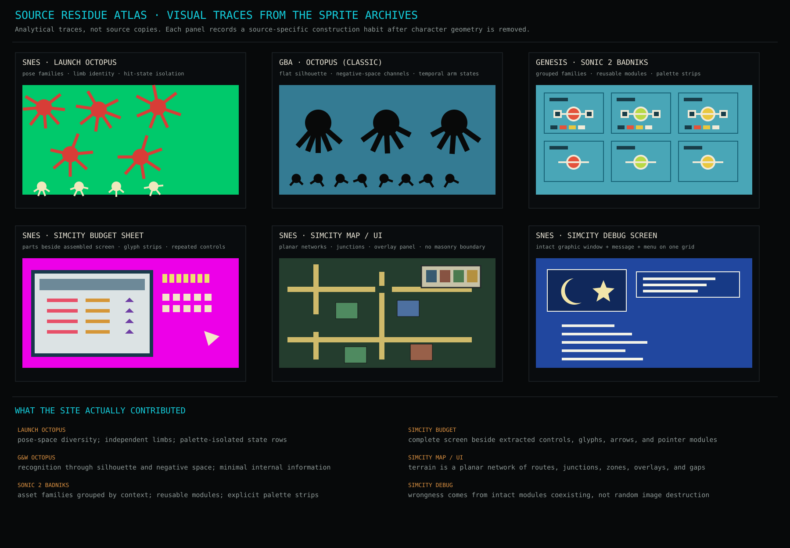

Cephalopod Icon Research v2
Sixteen explicit bitmap hypotheses and a source-specific residue atlas. The proof system separates pose-space, silhouette economy, module assembly, terrain-state failure, and organism-to-substrate coupling. The right side is treated as fields, rows, islands, apertures, overlays, and repeated modules rather than a brick wall.
Organism
Coherent left or center mass; no body disintegration.
Coherent left or center mass; no body disintegration.
Substrate
Planar terrain states, gaps, routes, and contacts.
Planar terrain states, gaps, routes, and contacts.
Corruption
Structured row, tile, aperture, palette, or layer failure.
Structured row, tile, aperture, palette, or layer failure.
Scale
Separate 32, 24, 16, and 12 pixel maps.
Separate 32, 24, 16, and 12 pixel maps.
Source residue atlas
